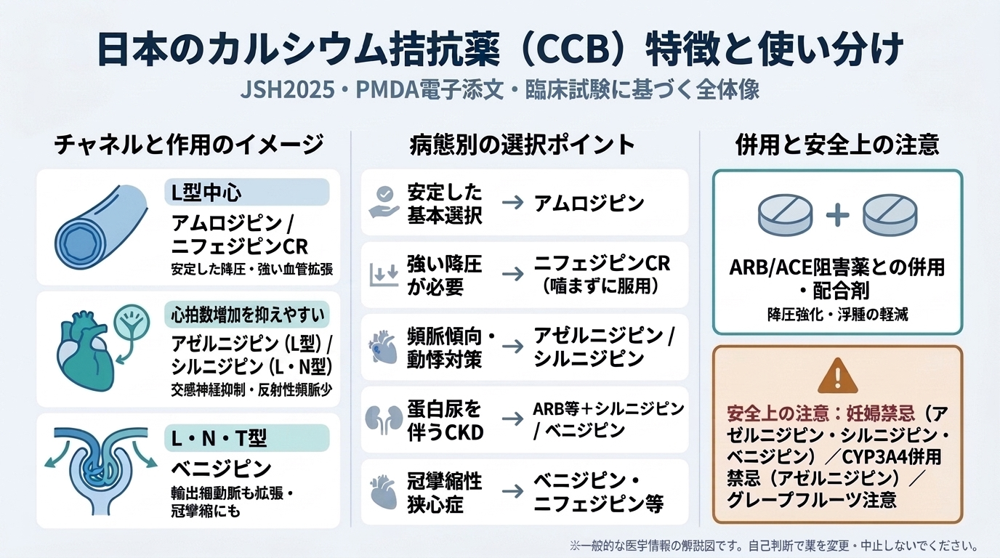

日本国内で使用されるカルシウム拮抗薬（CCB）の特徴と実臨床での使い分け
JSH2025（高血圧管理・治療ガイドライン2025）、PMDA電子添文、および主要臨床試験に基づくカルシウム拮抗薬（CCB）の全体像です。

図の要点
- チャネル選択性と作用特性：L型中心のアムロジピン（半減期約35〜38時間）・ニフェジピンCR（強力な降圧、分割・粉砕不可）に加え、N型阻害や交感神経抑制をもつシルニジピン（L・N型）・アゼルニジピン（L型・交感神経抑制）、L・N・T型を阻害するベニジピンがあります。
- 病態別の使い分け：基本の安定降圧にはアムロジピン、強い降圧が必要な場合はニフェジピンCR、頻脈傾向にはアゼルニジピン・シルニジピン、蛋白尿を伴うCKDではRAS阻害薬併用下でシルニジピン・ベニジピン、冠攣縮性狭心症ではベニジピン・ニフェジピン等が選択肢になります。
- 併用と安全上の注意：ARB/ACE阻害薬との併用は降圧強化と浮腫軽減に有用です。一方、アゼルニジピン・シルニジピン・ベニジピンは国内電子添文で妊婦禁忌であり、アゼルニジピンはクラリスロマイシンやアゾール系抗真菌薬などCYP3A4阻害薬との併用禁忌、グレープフルーツジュース飲用不可に注意が必要です。
出典と注意
日本高血圧学会『高血圧管理・治療ガイドライン2025（JSH2025）』、PMDA電子添文（各薬剤最新版）、およびPubMed収載の主要臨床試験（ALLHAT、ASCOT-BPLA、ACCOMPLISH、CASE-J、JMIC-B、CARTER、COPE等）に基づいて作成。一般的な医学情報であり、自己判断で降圧薬を変更・中止するための資料ではありません。